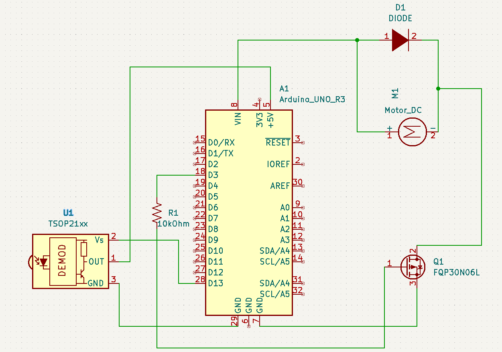

The circuit was powered with a 9V battery through the Vin pin and the modules I used are the FQP 30N06 MOSFET
transistor, a diode, a 10k Ohm resistor an IR sensor and remote, and a DC motor + fan combo.
Currently, I am unable to find a solution on how to work both the IR sensor and DC motor at the same time.
They seem to be interfering with each other, so the motor will not turn on as long as the IR sensor is active.
I programmed my arduino to use an IR reciever to turn on a DC motor when the power button is pressed on an IR remote.
If the motor is already on, pressing the power button again will turn the motor off.